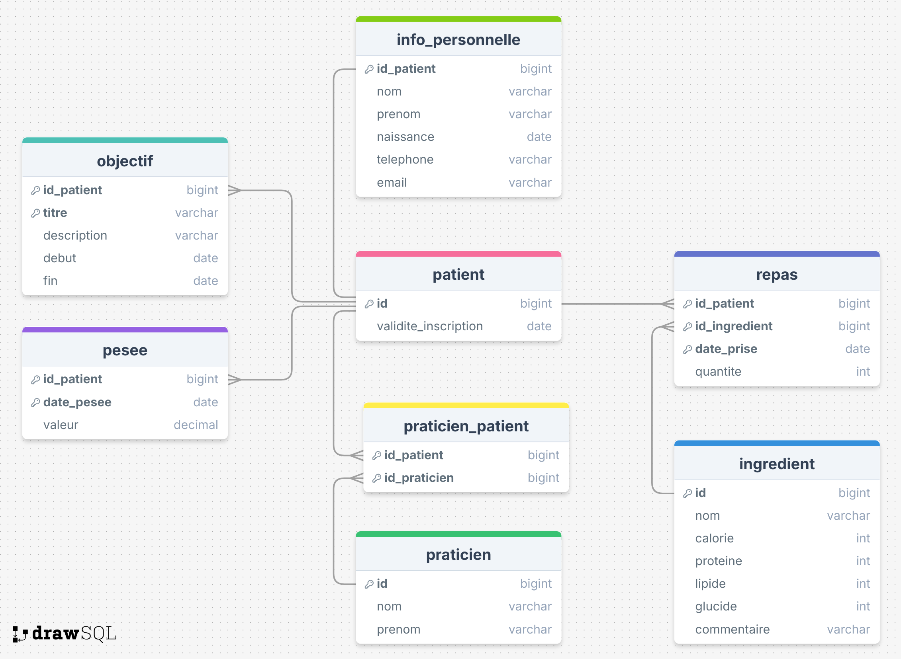

Questionnaire bonus
- Introduction
- Diagramme de base de données
- QCM
- Question ouverte
Introduction
Ci-dessous, un complément au chapitre 12.
Il se compose aussi d'un QCM reprenant la plupart des concepts vu
jusqu'à présent dans ce cours ainsi qu'une question ouverte demandant la
création d'un diagramme de base de données.
Essayez de répondre au maximum de question sans vous référencer au cours
Diagramme de base de données
On considère que toute colonne disposent d'une contrainte empêchant les valeurs nulles